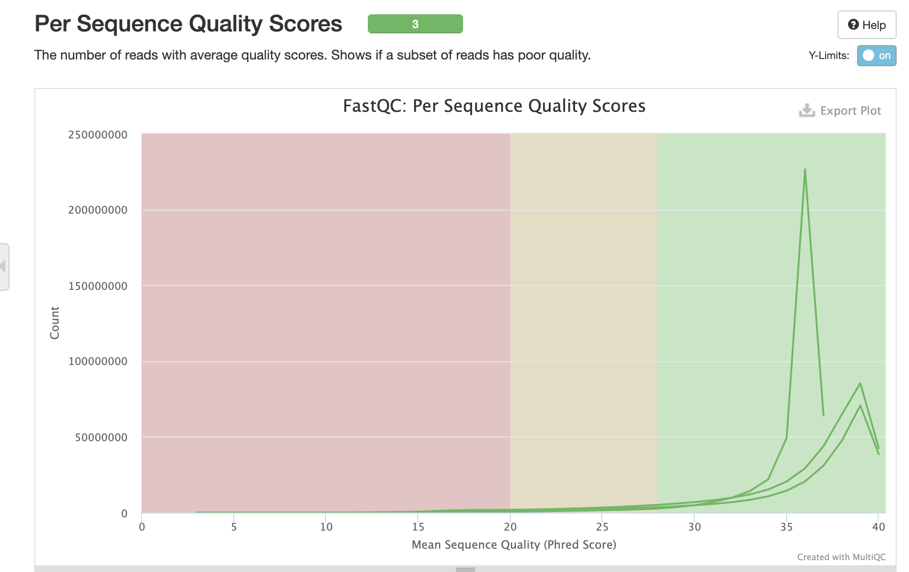
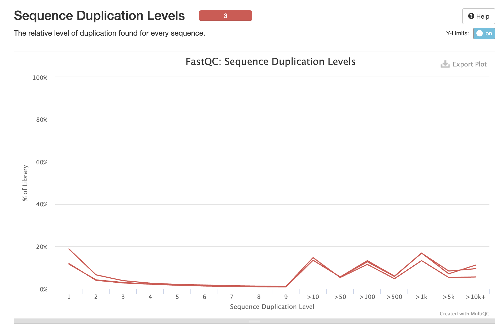
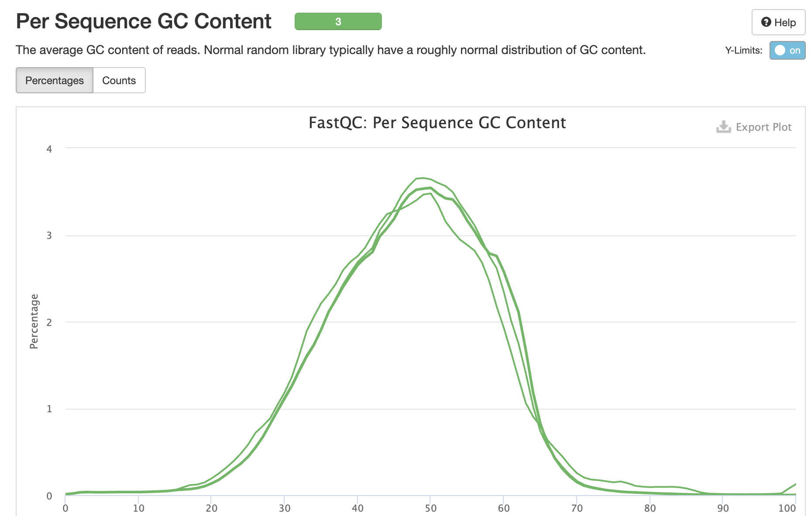

QC Checkpoint: Purkinje Cell scRNA-seq
Overview
Quality control analysis of raw FASTQ files from GSE256438 (Khouri-Farah et al., 2025) investigating Purkinje cell diversity in embryonic mouse cerebellum.
Dataset: - 3 samples: E16.5 (2 replicates), E18.5 - Technology: 10X Genomics Chromium - Sequencing: Illumina NextSeq 500
Methods
FASTQ files were downloaded from SRA using fasterq-dump and analyzed with FastQC v0.12.1. Results were aggregated using MultiQC v1.15.
Results
General Statistics
| Sample | Total Reads | % Duplicates | % GC | Status |
|---|---|---|---|---|
| SRR28065510 (E18.5) | 378.4M | 82.8% | 47% | ✅ Pass |
| SRR28065511 (E16.5 rep2) | 415.3M | 73.8% | 46% | ✅ Pass |
| SRR28065512 (E16.5 rep1) | 286.2M | 82.9% | 47% | ✅ Pass |
Sequence Quality

Interpretation: All samples show high base quality (Phred >30) across read positions, with expected slight degradation at read ends.
Duplication Levels

Interpretation: High duplication rates (73-83%) are flagged but EXPECTED for scRNA-seq due to: - Low RNA input per cell - PCR amplification during library prep - UMI-based deduplication in Cell Ranger will address this
GC Content

Interpretation: Normal GC distribution (~47%) consistent across samples and appropriate for mouse genome.
Issues Encountered & Solutions
Problem 1: Missing Technical Reads
Issue: Initial download using fasterq-dump --split-files only retrieved Read 2 (cDNA, 98bp). Barcode/UMI reads were discarded.
Evidence: Download logs showed:
reads read: 858,686,424
reads written: 286,228,808
technical reads: 572,457,616 # <- DISCARDEDSolution: Re-downloading with --include-technical flag to retain all reads required for Cell Ranger.
Problem 2: High Duplication Rates
Issue: FastQC flagged 73-83% duplication as concerning.
Solution: This is normal for scRNA-seq. Cell Ranger’s UMI collapse will remove PCR duplicates during alignment.
Next Steps
- Complete re-download with all technical reads (barcodes + UMIs)
- Re-run FastQC on complete dataset (R1 + R2)
- Cell Ranger alignment to mm10 reference
- Seurat QC: filter cells by nFeature, nCount, percent.mt
Session Info
- FastQC: v0.12.1
- MultiQC: v1.15
- Date: March 17, 2026